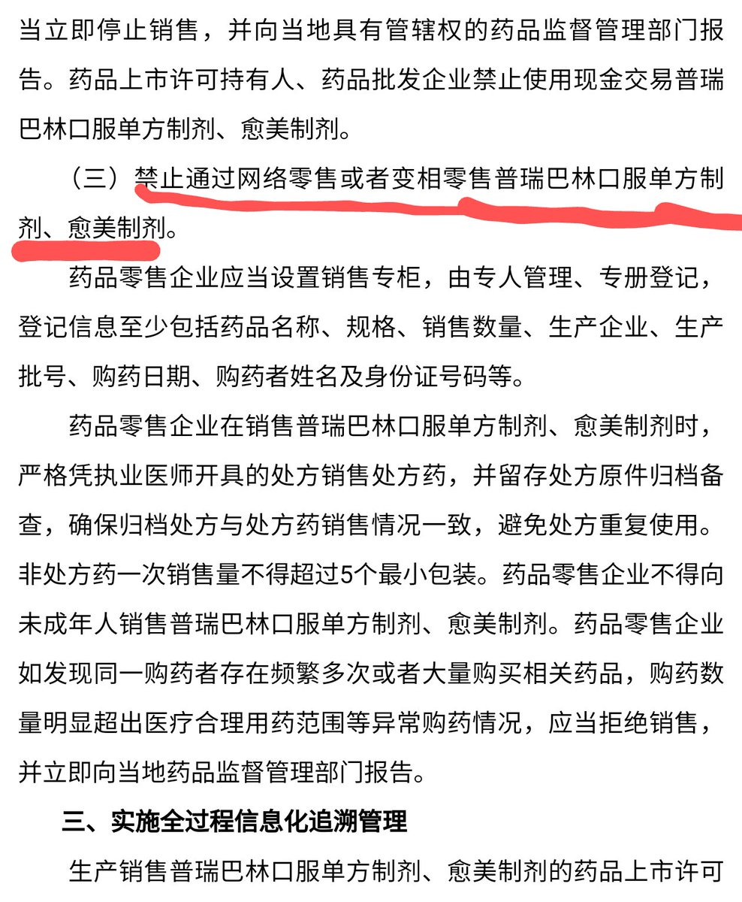

曦月🏳️⚧️🍥
@xyu1182202
@Coxe_Pica

MutsumiLovesYOU🇯🇵
@MutsumiXiaomu
你们有没有发现重要的一点？
就是关于pr和愈美被禁售的这个文件，竟然没有政策的开始执行日期（？！）
这种模糊性质的文件可信度能有多强呢？可能真要执行下来，又得是遥遥无期了...... https://t.co/IJX2SwmFmZ
芸光AuroraLight 🍥🏳️⚧️
@Coxe_Pica
普瑞巴林和愈美片将禁止在网上销售。以后od药品将无法从合规渠道购买。这是广州禁毒发力了吗？这算是一件好事还是坏事🧐 https://t.co/lzuCUKiGhu